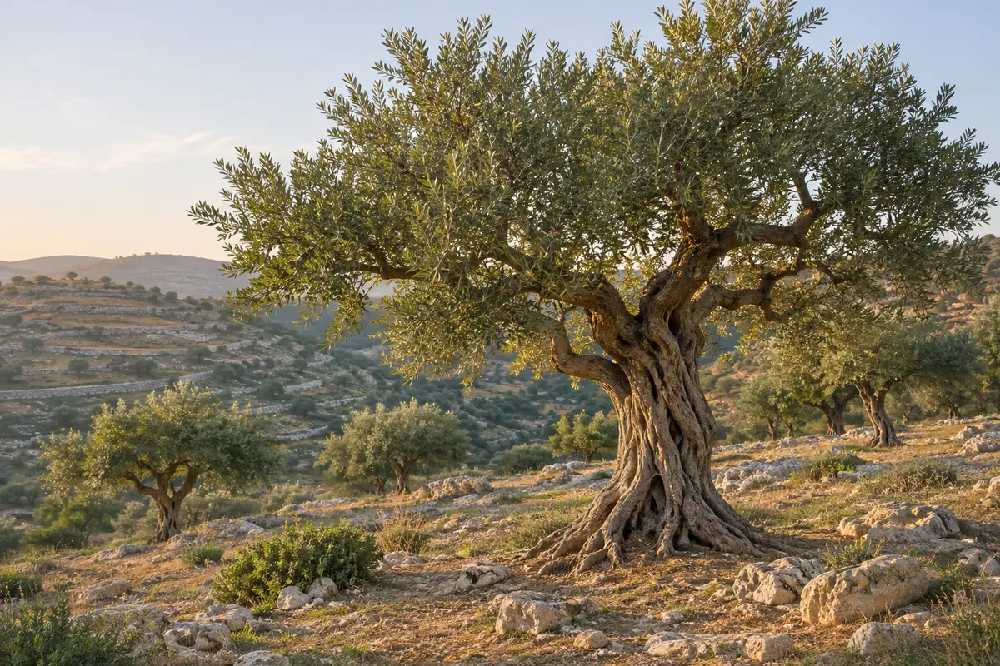

Come, Follow Me · November 16–22, 2026
I Will Love
Them Freely
Hosea 1–6 and 10–14 · Joel
Last week we were with Daniel in Babylon. Hosea takes us back more than a century, to a time when Jerusalem was still standing and a different empire was closing in. His picture of an olive tree is a good place to begin.
Start with the timeline
Where are we in the story?
Come, Follow Me follows the order of the Bible’s books here. Hosea comes after Daniel on the page. He preached about 150 years before the opening of Daniel’s story.
Israel in the north
Its capital was Samaria. This is where Hosea preached. He often calls the kingdom Ephraim.
Judah in the south
Its capital was Jerusalem. This is the kingdom Daniel and his friends were taken from.
-
After Solomon
One kingdom becomes two
Israel and Judah go their separate ways. “Israel” can still mean the whole family of Jacob, so the context matters when that name comes up.
-
Mid-700s BC
Hosea warns northern Israel
Assyria is growing more powerful. Israel looks to it for help, and Hosea warns that Assyria will end up ruling over them. Jerusalem is still home to the people of Judah.
-
About 722–721 BC
Assyria takes Samaria
The northern kingdom falls, and Assyria carries away many of its people. Judah survives for more than another century.
-
Early 600s BC
Babylon takes people from Judah
Babylon replaces Assyria as the dominant power. Daniel and his friends are taken to Babylon in the early years of its control over Judah. Around 587–586 BC, the Babylonians destroy Jerusalem and its temple and deport more people.
-
After 539 BC
Some exiles return to Jerusalem
Persia conquers Babylon. Cyrus lets the Jewish exiles return and rebuild the temple. That return is the part of the story we read in Ezra and Nehemiah.
Where does Joel fit? He speaks to Judah and Jerusalem, but his ministry is hard to date. Estimates fall on both sides of the Babylonian exile, so Hosea gives us the clearer date this week.
Hosea and Joel in plain English
Hosea compares Israel’s covenant with the Lord to a marriage. What stayed with me was how often the Lord invites us to come back to Him. Joel makes that invitation personal when he asks us to turn to God with our whole heart.
Hosea 1–6Gomer, the covenant, and mercy
- Hosea 1
- Hosea marries Gomer. Their children’s names warn Israel of the consequences of turning away from God. Even after a child is named “not my people,” the chapter ends with a promise that Israel will be called God’s children again.
- Hosea 2
- Israel is pictured as a wife who credits other lovers for what her husband gave her. The lovers stand for the gods Israel worshipped. In verses 14–23, the Lord speaks tenderly, gives her a place of hope, and promises to renew the relationship with kindness and faithfulness.
- Hosea 3
- Hosea pays silver and barley to bring the woman back. A period of waiting follows. The Lord says Israel will also spend a long time without its kings and familiar ways of worship before seeking Him again.
- Hosea 4
- Lying, theft, and violence have spread. The priests have neglected what they were meant to teach. The lack of knowledge Hosea describes is a people losing touch with God and how He taught them to live.
- Hosea 5
- Priests and rulers have helped lead Israel astray. Assyria can’t heal what has gone wrong. The Lord waits for the people to acknowledge their choices and seek Him.
- Hosea 6
- The people’s devotion disappears like dew in the morning. They still bring offerings while breaking their covenant. In verse 6, the Lord says that getting to know Him and showing mercy matter more than the sacrifices they bring. Jesus quotes this verse in Matthew.
Hosea 10–14Seeds, a parent’s love, and an olive tree
- Hosea 10
- Prosperity has led Israel to build more altars to idols. In verse 12, Hosea tells the people to break up unplowed ground and plant righteousness. Think of turning the soil in a field that’s been sitting unused. The people can start making room for a different kind of life.
- Hosea 11
- God remembers Israel as a child He brought out of Egypt and taught to walk. Israel keeps turning away. In the middle of a warning about Assyria, God asks how He could give Ephraim up. He still speaks like a parent who loves His child.
- Hosea 12
- Israel trusts foreign alliances and takes pride in wealth made through dishonest trade. Hosea remembers their ancestor Jacob, who wrestled and pleaded with God. He asks the people to return to God and deal with others fairly and mercifully.
- Hosea 13
- God cared for Israel in the wilderness. Once they had plenty, they grew proud and forgot Him. The manual pairs verses 4 and 14 to point to Jesus Christ as the Savior who can redeem us from death.
- Hosea 14
- Hosea gives the people words to pray as they turn back. God promises to heal them and love them freely. Here dew keeps a plant alive. Roots spread, branches grow, and Israel regains the beauty of a healthy olive tree.
Joel 1–3Locusts, a change of heart, and the Spirit
- Joel 1
- Locusts have stripped the land. Crops fail, animals go hungry, and there’s no grain or wine to take to the temple. Joel calls everyone to gather, fast, and pray.
- Joel 2:1–17
- Joel sounds an alarm about the day of the Lord. In verses 12–13, he tells the people to turn to God with their whole hearts. Tearing clothes was a public sign of grief. Joel asks for a change you actually feel and live.
- Joel 2:18–32
- God promises rain and crops again, and says He will restore what the locusts ate. Then the promise widens. God will pour out His Spirit on sons and daughters, old and young, even servants. Joel describes signs in the heavens and promises deliverance to those who call on the Lord.
- Joel 3
- God calls the nations to account for scattering and enslaving His people. The book ends with water flowing from the house of the Lord, Judah restored, and God dwelling with His people.
Other verses in the manualWhat Jesus said about mercy and how the Spirit comes
- Isaiah 48:18 & 1 Nephi 2:9–10
- Isaiah pictures peace flowing like a river and righteousness coming steadily like waves. Lehi asks Laman to keep moving toward God like a river and Lemuel to stay firm like a valley.
- Matthew 9:10–13 & Matthew 12:1–8
- Jesus quotes Hosea 6:6 twice. He sits down to eat with people others look down on, and He defends His hungry disciples when they pick grain on the Sabbath. Both scenes put a face on what Hosea means by mercy.
- Acts 2:1–21 & Joseph Smith—History 1:41
- At Pentecost, people hear the disciples speaking in their own languages. Peter points to Joel’s promise about the Spirit. Centuries later, Moroni quotes the same promise to Joseph Smith and says fulfillment is still ahead.
- Mosiah 4:1–3, 19–20 & Mosiah 18:7–11
- King Benjamin’s people ask for mercy and feel joy and peace through the Spirit. At the waters of Mormon, Alma promises the Spirit more abundantly to people who covenant to serve God and carry each other’s burdens.
- Helaman 6:34–36 & Doctrine and Covenants 19:37–41
- The Lamanites receive the Spirit as they willingly listen to God and live what they learn. The Lord also promises to pour out His Spirit as Martin Harris prays and comes to Him humbly.
- John 14:16, Moroni 10:5 & Doctrine and Covenants 42:17
- Jesus promises the Holy Ghost as a Comforter who can stay with His disciples. The Spirit helps us know what’s true and bears witness of the Father and the Son.
Two passages, one olive tree
In Hosea 14, the tree shows what healing looks like. In Jacob 5, we get to watch the gardener at work. Both passages use the tree to talk about Israel.
Hosea 14:4–8
“I will heal their backsliding, I will love them freely.”
God promises Israel a fresh start. A plant that’s been struggling puts down roots and grows new branches. It grows enough to give others shade.
Jacob 5:41
“What could I have done more for my vineyard?”
The gardener weeps when the trees stop bearing good fruit. Later, his helper asks for more time, and they go back to work.
Where to start in Jacob
- Jacob 4:15–18
Jacob asks how people who have rejected Christ, the sure foundation, could ever build on Him again. That’s the question he carries into the story of the olive trees.
- Jacob 5:3–6, 15–18
Jacob quotes the prophet Zenos. A gardener tends a dying tree, sees a few new shoots, and comes back after a long time. Some growth is slow enough that it takes another visit to see it.
- Jacob 5:29–41, 50–52, 70–75
Good fruit gives way to bad. The gardener grieves, agrees to spare the trees a little longer, and brings in more help. He works alongside his helpers until the trees bear good fruit again.
- Jacob 6:4–6
Jacob says God remembers Israel, roots and branches, and keeps reaching out. Then he asks his listeners to turn to God themselves and hold on to Him as He holds on to them.
Give the tree some time
In this Keystone interview, Joseph Grenny talks about what happens when someone in the family steps away from the Church. One minute of the conversation is about the long stretches between the gardener’s visits in Jacob 5.
Joseph Grenny on Keystone
24:49–25:49 · 1 minute
The gardener tends the tree, gives it time, and returns. I’d just heard Grenny talk about letting someone take their time while continuing to love them. Reading Hosea made me think of that conversation again.
Open at 24:49 on YouTubeEarlier in the interview, Grenny suggests taking a breath and asking what story we’re telling ourselves. I might feel hurt, then assume someone meant to hurt me. Pausing gives me a chance to question that assumption and keep the door open. Hear Grenny on the stories we tell ourselves at 17:12.
Later, Grenny tells how he and his son agreed to quit taking digs at each other’s beliefs. It started when he admitted what he’d been doing himself. Hear that story at 45:34.
Questions for Sunday
- What do the roots and branches in Hosea add to the promise “I will love them freely”?
- What do you notice about how the gardener cares for the trees when growth is slow or goes backward?
- Imagine someone you love tells you they see faith differently now. What might you feel? What might you assume? What could you say to help them know you’re here whenever they want to talk?
Joel asks us to look at our own hearts. As you read Joel 2:12–13, think of one person you could check in on.